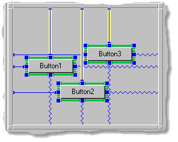
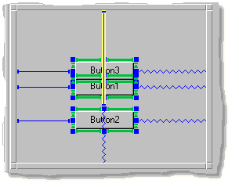
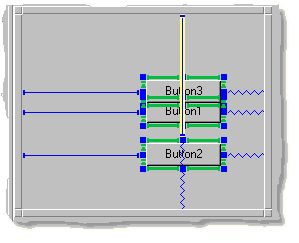

Dialog Editor
Related Topics
DialogsUse the Dialog Editor to create dialogs for your application. The Dialog Editor opens when you add a new Dialog to the Application Objects List in the Object Editor. You can also open a Dialog Editor by clicking on a dialog in the Application Objects List.
Use the Dialog Editor to:
- Add new dialog items to a dialog
- Select items for editing
- Remove dialog items from a dialog
- Cut, Copy and Paste
- Edit a dialog's spring solution
- Position dialog items
- Resizing an item
- Place dialog items in a container
- Resize a dialog
- Open dialog item editors
Dialog Editor Map
Dialog Frame
The Dialog Editor contains a Dialog Frame which determines the size of the dialog. Dialog items are placed, sized, and positioned within the Dialog Frame.
Adding Dialog Items
To add a dialog item to a dialog, select the Dialog Items page of the Object Notebook. Then, click and drag the item from the Dialog Items Palette into the Editor Frame.
Selecting Items
Most items must be selected before they can be edited. A selected item is indicated by the appearance of square "handles" around the item.To select an item, click on it once.
To select several items, either hold down the Control key while clicking on each item, or click in the dialog and drag the mouse. Items completely enclosed in the mouse selection area are selected. To select items that are only partially enclosed, hold down the Control key while dragging the mouse.
To select all items, choose the Edit:Select All menu option.
Unselecting Items
To unselect a selected item, click on it once.To unselect several selected items, hold down the Control key while clicking on each selected item.
To unselect all selected items, click on an empty area in the dialog.
Removing Dialog Items
To remove dialog items, select the items you want to remove. Then, use Clear or Cut from the Edit menu or the toolbar, or press the Delete key from the keyboard.Cut, Copy and Paste
You can Cut, Copy, and Paste a selected object by using the Edit menu or the keyboard accelerators. Pasted objects are placed in the upper left hand corner with the default spring solution.Editing a Dialog's Spring Solution
You can specify the placement and size of items in a dialog by editing its spring solution. Each item has a series of outer connections, spring and/or struts, that define the item's relative position in the dialog. A spring is elastic, and expands or contracts to fill the available space. A strut, on the other hand, is a fixed length. In the Dialog Editor springs are displayed as zig-zag lines, struts as solid lines.Note that items also have inner connections that specify the size of the item. Resizing an Item discusses how to use inner connections to specify the size of an item.

Positioning Items
Moving Items to New Locations
To move an item to a new location, select and drag the item. For more precision, select the item and use the arrow keys to adjust the item's position.Note that if an item does not move to a new location, its spring solution may have locked it into place. This is usually because it has spring connections in the direction you are trying to move it. You can edit an item's connections directly in the Dialog Editor, or by using the Spring Editor. For more information on working with connections, refer to the Connections Tutorial.
Aligning Items
To align items, select the items you want to align and then select an option from the Item:Align menu. You can also use the appropriate alignment icon from the Arrange Toolbar to align selected items.
Three or more items can be distributed so they are equidistant from each other. To distribute items, select the items you want to distribute and then select an option from the Item:Distributemenu. You can also use the appropriate alignment icon from the Arrange Toolbar to distribute selected items.
The following alignment choices are available.
- Unaligned items
For comparison purposes, here's a screenshot showing unaligned items. - Left
Left sides of all items line up with the left side of the leftmost item.
- Horizontal Centers
Horizontal centers of all items line up on the same vertical line; item positions change horizontally. - Right
Right sides of items line up with the right side of the rightmost item. - Top
Top sides of all items line up with the top side of the topmost item.
- Vertical Centers
Vertical centers of all items line up on the same horizontal line; item positions change vertically.
- Bottom
Bottom sides of items line up with the bottom side of the bottommost item.
- Distribute Horizontally
Items are distributed evenly between the right and left items; item positions do not change vertically.
- Distribute Vertically
Items are distributed evenly between the top and bottom items; item positions do not change horizontally.
Moving Items Forward or Backward
Items have a relative "front to back" position in a dialog. When a new item is placed in a dialog it is placed on top of other dialog items previously placed in the dialog. Use the forward and backward commands to change the relative order of items. This is particularly useful when you need to select an item but it is behind other larger items.Note that the relative "front to back" position affects the tabbing order of the items in a dialog. The tabbing order is the order by which items are selected as the user presses the tab key while the dialog is active.
To change the relative order of items, select the item you want to change. Then select an option from the Item menu. The following commands are available:
- Bring to Front
Moves a dialog item to the front of the stack. - Bring Forward
Moves a dialog item one layer closer to the front of the stack. - Send Backward
Moves a selected dialog item one layer closer to the bottom of the stack. - Send to Back
Moves a selected dialog item to the back of the stack.
Resizing an Item
An item size can either be a fixed length (a specific length) or natural-sized (length is determined by the contents of the item).Natural sized items have green inside connections, like this:
Items with a fixed length have blue inside connections, like this:
Resizing a Fixed Length Item
Select the item and drag one of the item's "handles" (handles appear on the edge of selected items).
Making an Item Natural-sized
To make an item natural-sized, select all of the inside connections and then choose Connection:Natural Length.Making an Item a Fixed Length
To make an item a fixed length, select all of the inside connections and then choose Connection:Fixed Locked Length.Note: For more information on natural sizing and connections, refer to the Connections Tutorial.
Placing Items in a Container
To place dialog items in a container, select the items, and then use the Item:Place in Container menu option. Once items are placed in a container, use the Container Editor to edit the items. Double-click on the container to open the Container Editor.Note that dragging a dialog item on top of a container does not add the item to the container. Use either the Edit:Place in Container command or the Container Editor to place items in a container.
To remove all the items from a container, select the container, and then use the Edit:Remove From Container menu option. To remove individual items from a container, use the Container Editor.
Resizing a Dialog
To resize a dialog, click on any corner of the Dialog Frame and drag it to the desired size.If you resize a dialog beyond the margin of the Object Editor resize the Object Editor to view the entire dialog.
Opening Dialog Item Editors
To open an editor for a dialog item placed in the Dialog Editor, double-click on the item or select the item and press Return or Enter. If an editor for the item is available, it opens inside a separate Object Editor. After editing the item, close the newly opened Object Editor to return to the original Object Editor.Table of Contents
Switch to Another Document
Need help? Contact Visix.